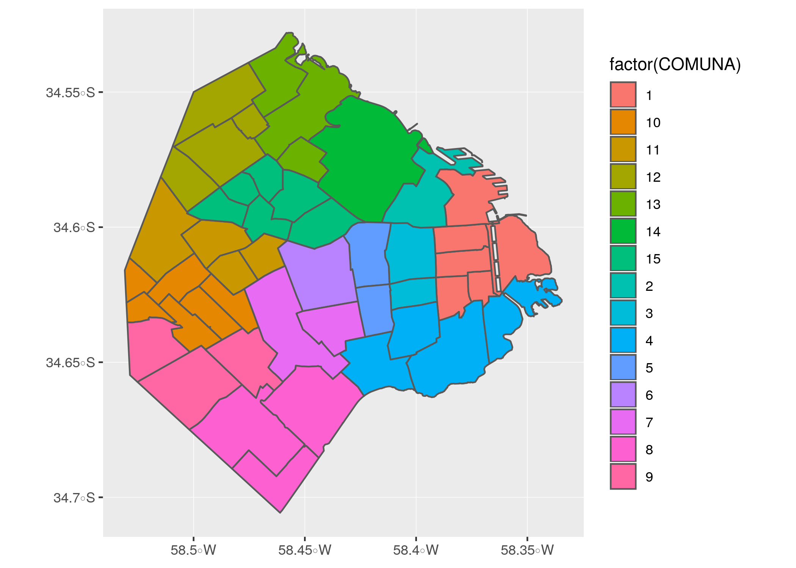

Capítulo 2 Una presentación a toda marcha de R
R es un lenguaje de programación especializado en análisis y visualización de datos. Es un producto de código abierto, lo cual significa que cualquier persona puede usarlo y modificarlo sin pagar licencias ni costos de adquisición de ningún tipo.
Expertos de todo el mundo colaboran en forma activa con el proyecto, no sólo desarrollando el lenguaje en sí (llamado “R base”), sino también extendiéndolo con nuevas habilidades que pueden ser incorporadas por los usuarios finales en forma de “paquetes” instalables.
La calidad del lenguaje en sí, de los paquetes instalables que le agregan un sinfín de funciones (desde algoritmos de inteligencia artificial hasta mapas interactivos) y de la comunidad de usuarios que comparte información en foros y blogs, ha hecho de R uno de los lenguajes de programación más populares del mundo. En el campo del análisis de datos, es la herramienta por excelencia en muchas universidades, empresas de tecnología, y redacciones de periodismo de datos.
2.1 Nuestro primer proyecto en R
A continuación reproduciremos un ejercicio paso a paso, para ilustrar la potencia de una herramienta de análisis como R. Que nadie se preocupe si algunas de las operaciones parecen no tener sentido, o resultan arbitrarias. ¡Es normal! Nadie aprende un lenguaje en 10 minutos, sea R o esperanto. La idea es tener exposición temprana a un caso de uso interesante, usando datos reales. Y que nos sirva como motivación para practicar luego ejercicios básicos que son muy necesarios pero, a veces, no tan emocionantes.
2.1.1 Crear un proyecto en RStudio
El primer paso es ejecutar RStudio, que ya deberíamos tener disponible en nuestro sistema.
Una vez abierta la interfaz gráfica, creamos un proyecto nuevo, cliqueando en File -> New Project... -> New Directory -> New Project. En la ventana que surge, elegir un nombre para el proyecto (por ejemplo, “Practicando R”) y finalizar la operación cliqueando en Create project.
Utilizar proyectos nos permite continuar otro día desde donde dejamos la tarea al terminar una sesión. Es sólo cuestión de recuperar el proyecto deseado la próxima vez que abrimos RStudio, cliqueando en File -> Recent Projects -> "nombre de mi proyecto".
Por ahora, sigamos trabajando. Vamos a crear un “script”. Un script, como su nombre en inglés lo indica, es un guión; una serie de pasos que escribimos para que nuestra computadora ejecute en secuencia. Cliqueamos en File -> New File -> R Script. De inmediato se abre una ventana con un editor de texto. ¡Ahora empieza la acción!
2.1.2 Escribiendo un script
Aprovechemos para dar un nombre a los áreas que vemos en RStudio:

Figura 2.1: La interfaz de RStudio
Vamos a escribir nuestro código (las instrucciones que R entiende) en el panel de edición. Los resultados van a aparecer en la consola (cuando se trate de texto) o en el panel de salida (cuando produzcamos gráficos)
Por ejemplo, podemos escribir el panel de edición la instrucción para mostrar el resultado de una operación matemático:
sqrt(144)sqrt() es una función. En el mundo de la programación, las funciones son secuencias de código ya listas para usar, que realizan tareas útiles. Por ejemplo, mostrar algo en pantalla. En nuestro caso, completamos la función con algo más: un parámetro, pues así se le llama a los valores que una función espera de parte del usuario para saber que hacer. La función print espera que le demos un número para el cual calcular su raíz cuadrada (square root en inglés), y eso hicimos: le pasamos cómo parámetro 144, un número. Los parámetros siempre se escriben entre paréntesis, a continuación del nombre de la función.
Ahora vamos a aprender la combinación de teclas más importante al usar RStudio: Ctrl + Enter. Presionar Ctrl + Enter al terminar de escribir una instrucción hace que RStudio la ejecute de inmediato, y espere en la siguiente instrucción, si la hubiera.
Cambien podemos buscar una línea que deseemos ejecutar, posicionando el cursor de texto (que luce como una barra vertical que titila, en el panel de edición) sobre ella. Si a continuación pulsamos Ctrl + Enter, la línea será ejecutada y el cursor se moverá sólo hasta la siguiente línea, listo para repetir el proceso.
La modalidad de ejecución línea por línea es muy útil para lo que se llama “análisis interactivo”. Uno ejecuta un comando, observa el resultado, y en base a eso decide su próxima acción: cambiar parámetros e intentarlo de nuevo, dar por buenos los resultados y usarlos para una tarea subsiguiente… etc.
Por ejemplo, si escribimos las siguientes líneas:
sqrt(144)
mensaje <- "Hola mundo"
mensaje…y posicionamos el cursor en cualquier posición de la primera línea, para luego pulsar Ctrl + Enter tres veces, veremos que las instrucciones son ejecutadas línea a línea.
sqrt(144)## [1] 12mensaje <- "Hola mundo"mensaje## [1] "Hola mundo"Dos de ellas (la primera y la última) mostraron una salida en pantalla, y la del medio, no. Esto es porque algunas funciones entregan algo como resultado algo -un número, un texto, un gráfico, u otros tipos de salida que ya veremos- mientras que otras hacen su tarea silenciosamente sin expresar nada. En este caso, la función silenciosa fue la de asignación: mensaje <- "Hola mundo" es una instrucción que le pide a R que cree una variable llamada “mensaje” (o que la encuentre si ya existe) y que le asigne como valor el texto “Hola mundo”. ¿Cómo sabemos que la instrucción se llevó a cabo, a pesar de no producir una salida? En general, es un tema de confianza. Si una instrucción no genera un mensaje de error, si es silenciosa, se asume que pudo cumplir su cometido. En este caso, además lo hemos verificado. La línea final, mensaje pide a R que busque la variable, y muestre en pantalla su contenido (esa es una característica muy práctica del lenguaje: para saber el contenido de una variable, basta con escribirla y ejecutar la línea). Y al hacerlo, comprobamos que la variable contiene precisamente lo que hemos tipeado.
De paso, hay que mencionar que la creación y manipulación de variables es un concepto clave en programación. Trabajar con variables nos permite almacenar valores para usarlos después, además de hacer nuestro código más fácil de leer y compartir con otros, en especial cuando usamos nombre de variable auto-explicativos. Como ejemplo de ésto ultimo comparemos
x <- 8 * 6
x## [1] 48… con
ancho_habitacion_m <- 8
profundiad_habitacion_m <- 6
superficie_habitacion_m2 <- ancho_habitacion_m * profundiad_habitacion_m
superficie_habitacion_m2## [1] 48En su resultado ambas expresiones son iguales, dado que producen lo mismo. Pero la segunda esta escrita de una forma mucho más clara para un ser humano, que hace más fácil interpretar su lógica… ¡está calculando la superficie en metros cuadrados de una habitación!. Es muy importante escribir nuestro código de la forma más explícita posible, aunque requiera tipear un poco más. Con ello, le hacemos la vida más fácil a otras personas que interpreten nuestros programas. Y también a nosotros mismos en el futuro, cuando debamos lidiar con un programa que escribimos tiempo atrás y del que a duras penas recordamos su lógica.
2.2 Un ejemplo de análisis paso a paso
Imaginemos por un momento que trabajamos en un área del Gobierno de la Ciudad encargada de analizar los reclamos y solicitudes que realizan los vecinos. Para abordar el tema, algunas preguntas que de inmediato vienen a la mente son ¿Qué tipo de solicitudes hacen los ciudadanos, en qué cantidad, y en dónde?
Disponiendo de los datos necesarios, podemos usar R para encontrar las respuestas.
Vamos a cargar datos provenientes de los registros del Sistema Único de Atención Ciudadana (o SUACI), la plataforma del Gobierno de la Ciudad que administra los contactos iniciados por ciudadanos. En el portal de datos abiertos de la Ciudad se publica cada uno de los contactos recibidos por SUACI año a año. El tipo de archivo con el que se publican es “.csv” (o “comma separated values”) un formato muy popular en el mundo de la ciencia de datos, ya que es muy fácil de manipular y compartir entre sistemas. Es posible abrir un archivo .csv hasta con el humilde block de notas. Al igual que los archivos .xls, los .csv se utilizan para guardar información tabular: un rectángulo con filas y columnas. R incluye una función que lee archivos .csv, que se llama read.csv. La usamos así:
suaci2018 <- read.csv('https://bitsandbricks.github.io/data/gcba_suaci_2018.csv')Obsérvese que los datos están alojados en un servidor de internet (accesibles vía https://bitsandbricks…). Eso no es problema para la función read.csv, que con la misma soltura lee archivos guardados en nuestra PC o publicados en un sitio web. Para ver el contenido de la variable donde guardamos el resultado de leer la data, suaci2018, sólo hace falta escribir su nombre:
suaci2018## BARRIO CONTACTOS
## 1 AGRONOMIA 7378
## 2 ALMAGRO 31420
## 3 BALVANERA 28616
## 4 BARRACAS 23106
## 5 BELGRANO 46936
## 6 BOCA 11495
## 7 BOEDO 12926
## 8 CABALLITO 50301
## 9 CHACARITA 11076
## 10 COGHLAN 8920
## 11 COLEGIALES 18637
## 12 CONSTITUCION 7569
## 13 FLORES 38462
## 14 FLORESTA 13589
## 15 LINIERS 17606
## 16 MATADEROS 19771
## 17 MONSERRAT 10716
## 18 MONTE CASTRO 15459
## 19 NUEVA POMPEYA 11762
## 20 NUÑEZ 26556
## 21 PALERMO 75068
## 22 PARQUE AVELLANEDA 14914
## 23 PARQUE CHACABUCO 16560
## 24 PARQUE CHAS 8948
## 25 PARQUE PATRICIOS 13559
## 26 PATERNAL 7255
## 27 PUERTO MADERO 1939
## 28 RECOLETA 30339
## 29 RETIRO 10646
## 30 SAAVEDRA 18232
## 31 SAN CRISTOBAL 11050
## 32 SAN NICOLAS 12526
## 33 SAN TELMO 5281
## 34 VELEZ SARSFIELD 11586
## 35 VERSALLES 5835
## 36 VILLA CRESPO 25748
## 37 VILLA DEL PARQUE 25224
## 38 VILLA DEVOTO 34361
## 39 VILLA GRAL. MITRE 11417
## 40 VILLA LUGANO 24853
## 41 VILLA LURO 11485
## 42 VILLA ORTUZAR 11150
## 43 VILLA PUEYRREDON 18985
## 44 VILLA REAL 5496
## 45 VILLA RIACHUELO 5311
## 46 VILLA SANTA RITA 13265
## 47 VILLA SOLDATI 9811
## 48 VILLA URQUIZA 40146Vemos que la tabla tiene 48 filas (una por cada barrio de la ciudad) y 2 columnas (una con el nombre del barrio, y otra con la cantidad total de contactos registrados en 2018).
En R, las tablas son llamadas dataframes. El dataframe es el objeto por excelencia del análisis de datos. En concepto, es muy similar a una tabla de excel; al fin y al cabo, ambos formatos guardan información en celdas identificadas por fila y columna.
Algunas funciones útiles para explorar un dataframe que no conocemos son dim(), que nos da las dimensiones del dataframe (cantidad de filas y columnas), names() que nos dice como se llaman sus columnas (que en general representan variables), y head() que nos permite echar un vistazo rápido al contenido, mostrando sólo las seis primeras filas (ésto es útil porque con frecuencia trabajamos con dataframes que contienen miles o millones de filas, con lo que no tiene sentido tratar de volcar todas en pantalla).
dim(suaci2018)## [1] 48 2names(suaci2018)## [1] "BARRIO" "CONTACTOS"head(suaci2018)## BARRIO CONTACTOS
## 1 AGRONOMIA 7378
## 2 ALMAGRO 31420
## 3 BALVANERA 28616
## 4 BARRACAS 23106
## 5 BELGRANO 46936
## 6 BOCA 114952.3 Visualización: la exploración gráfica de la información
Ahora es vamos a pisar el acelerador. Insisto: nadie debe preocuparse si algunos conceptos parecen ser demasiado complejos. En las próximas secciones practicaremos de forma gradual las técnicas que vamos a usar ahora, y todo tendrá sentido -¡lo prometo!. Pero antes, seamos un poquito irresponsables con el poder de R y empleemos un arsenal sofisticado de herramientas para ver de que somos capaces.
En la introducción hablamos de los paquetes, conjuntos de programas que extienden la funcionalidad de R. Vamos a cargar uno de los paquetes más usados, tidyverse. Tidyverse incluye una gran cantidad de funciones diseñadas por y para practicantes de la ciencia de datos. Estas funciones comparten una filosofía y una sintaxis común, por lo que al aprender una en cierto modo aprendemos a usar todas. El valor que aportan es que, sin dudas, ayudan a realizar de manera más fácil las tareas típicas de la ciencia de datos: importar, limpiar, comprender y comunicar datos.
Si acabamos de instalar R y RStudio, el paquete aún no estará disponible en nuestro sistema. Para instalarlo, usamos la función install.packages() y le pasamos el nombre del paquete deseado, “tidyverse”, entre comillas.
install.packages("tidyverse")De aquí en más, podremos activar el conjunto de funciones que provee tidyverse cada vez que queramos. Para eso, lo invocamos con la función library():
library(tidyverse)… y listo para usar. La razón por la cual activamos tidyverse es que en este momento nos vienen bien dos de sus funciones: mutate() para modificar valores, y ggplot() para hacer gráficos.
Bien, llega la hora presentar información en forma visual. Vamos a llamar a la función ggplot(), una auténtica navaja suiza para la visualización.
Por ejemplo, veamos cuantos contactos sumó cada barrio durante 2018:
ggplot(suaci2018) +
geom_col(aes(x = BARRIO, y = CONTACTOS)) +
coord_flip()Para realizar una visualización con ésta herramienta, siempre se comienza con la función ggplot(), que crea un eje de coordenadas sobre el cual se pueden agregar capas. El primer parámetro que recibe ggplot() es el dataset que queremos usar para el gráfico; en nuestro caso, ggplot(suaci2018). Ejecutar sólo ggplot(suaci2018) nos devuelve un gráfico vacío; la gracia está en agregar una o más capas especificando cómo queremos mostrar los datos. Estas capas se agregan con un signo +.
En nuestro ejemplo, geom_col() crea columnas cuya posición en el eje vertical depende de la variable “BARRIO”, mientas que la extensión (posición en el eje horizontal) depende del valor de la variable “CONTACTOS”. Existen muchas funciones del tipo “geom_XXX”, que agregan distintas clases de capas al gráfico: geom_point, geom_polygon, geom_text y muchos, muchos más que iremos viendo más adelante.
Cada función “geom_” toma como parámetro un conjunto de definiciones “estéticas” que le indican una variable a graficar (“CANTIDAD” en nuestro caso), cómo representar los valores (por color, tamaño, etc) y en dónde (posición en el eje x, posición en el eje y). Estos parámetros van siempre dentro de una función auxiliar, aes(). En nuestro ejemplo, “aes(x = BARRIO, y = contactos)”. La última línea, “coord_flip()”, cambia la disposición de los ejes; en lugar de las x en horizontal y las y en vertical, al revés. ¿Porqué es útil a veces trastocar la posición de los ejes? Prueben correr la función sin agregar esa línea, ggplot(suaci2018) + geom_col(aes(x = BARRIO, y = CONTACTOS)), y verán.
No se preocupen que iremos practicando el uso de ggplot, y su uso se volverá familiar.
En cuanto al gráfico que hemos creado, podemos observar que entre las 48 barrios de la ciudad la cantidad de contactos en 2018 varió bastante. Si escudriñamos las líneas podemos arriesgar que van de de un par de miles en Puerto Madero a unos 75000 en Palermo. Lo que no nos muestra son patrones espaciales: ¿Cómo es la distribución geográfica de las solicitudes? ¿Los barrios con mayor demanda son los de una región de la ciudad en particular? Para responde esas preguntas, necesitamos un mapa.
2.3.1 Haciendo mapas
Vamos a presentar un paquete más, el último para éste capítulo: sf. Quizás algunos tengan experiencia con sistemas de información geográfica (GIS por sus siglas en inglés), al estilo de QGIS o ArcGIS, que permiten crear, manipular y combinar archivos con datos espaciales para producir mapas que pueden ser simples o en extremo sofisticados. En R, el paquete sf brinda herramientas que permiten realizar tares similares.
Nuestro objetivo es obtener un mapa de la ciudad de Buenos Aires con sus comunas.
Primero, instalamos sf en caso de que aún no lo hayamos hecho.
install.packages("sf")Vale la pena insistir: Sólo es necesario instalar los paquetes una vez. De aquí en más, cada vez que querramos echar mano a las funciones incluidas en sf, sólo necesitamos activarlo pues ya estará listo en nuestro sistema. Pedimos a R que active el paquete así:
library(sf)Luego, cargamos un archivo georeferenciado con las comunas de la Ciudad Autónoma de Buenos Aires, disponible online en formato geojson, un estándar de representación de datos geográficos que es fácil de usar:
barrios <- st_read('https://bitsandbricks.github.io/data/CABA_barrios.geojson')## Reading layer `CABA_barrios' from data source `https://bitsandbricks.github.io/data/CABA_barrios.geojson' using driver `GeoJSON'
## Simple feature collection with 48 features and 4 fields
## geometry type: POLYGON
## dimension: XY
## bbox: xmin: -58.53152 ymin: -34.70529 xmax: -58.33514 ymax: -34.52754
## epsg (SRID): 4326
## proj4string: +proj=longlat +datum=WGS84 +no_defsAl igual que cuando usamos read.csv() para leer un archivo .csv y cargarlo como un dataframe, el comando st_read() hace lo propio con archivos de información geográfica, conocidos en la jerga como “shapefiles”. El resultado también es un dataframe, por lo cual podemos practicar el uso de las funciones que ya aprendimos, como dim(), names() y head().
dim(barrios)## [1] 48 5names(barrios)## [1] "BARRIO" "COMUNA" "PERIMETRO" "AREA" "geometry"head(barrios)## Simple feature collection with 6 features and 4 fields
## geometry type: POLYGON
## dimension: XY
## bbox: xmin: -58.50617 ymin: -34.63064 xmax: -58.41192 ymax: -34.57829
## epsg (SRID): 4326
## proj4string: +proj=longlat +datum=WGS84 +no_defs
## BARRIO COMUNA PERIMETRO AREA geometry
## 1 CHACARITA 15 7725.695 3118101 POLYGON ((-58.45282 -34.595...
## 2 PATERNAL 15 7087.513 2229829 POLYGON ((-58.46558 -34.596...
## 3 VILLA CRESPO 15 8132.699 3613584 POLYGON ((-58.42375 -34.597...
## 4 VILLA DEL PARQUE 11 7705.390 3399596 POLYGON ((-58.49461 -34.614...
## 5 ALMAGRO 5 8537.901 4050752 POLYGON ((-58.41287 -34.614...
## 6 CABALLITO 6 10990.964 6851029 POLYGON ((-58.43061 -34.607...Podemos ver que el dataframe contiene 48 filas y 5 columnas. Una fila por barrio, y una columnas por cada variable disponible: “BARRIO”, “COMUNA”, “PERIMETRO”, “AREA” y “geometry”. Nuestro vistazo mediante head() permite asumir que “BARRIO” contiene los nombres, COMUNA indica la unidad administrativa, y PERIMETRO y AREA informan sobre las dimensiones del polígono cubierto por cada barrio. La columna “geometry” aparece en todos los dataframes de tipo espacial, y es la que contiene los datos con sus coordenadas geográficas.
Y hablando de coordenadas, generar un mapa a partir de un dataframe espacial creado por sf es muy fácil con la ayuda de ggplot():
ggplot(barrios) +
geom_sf()Si queremos agregar una leyenda al mapa que identifique la comuna a la que pertenece cada barrio, usamos:
ggplot(barrios) +
geom_sf(aes(fill = factor(COMUNA)))
Dentro de “aes()” usé el parámetro “fill” (relleno en inglés) para pedirle a ggplot() que llene cada polígono con un color distinto de acuerdo al campo “COMUNA”. Lo mismo podríamos hacer para ver la distribución de solicitudes registradas en SUACI, pintando los barrios con una escala de colores que indique el nivel de solicitudes que les corresponde. Pero antes de hacer eso, pensemos: es de esperarse que los barrios más poblados representen un mayor número de solicitudes que los más pequeños, ya que al fin y al cabo tienen más gente viviendo dentro. Nos interesa la cantiad de contactos per cápita, lo cuál debería darnos una mejor idea acerca de las diferencias entre barrios en lo que respecta a cuánta interacción hay entre vecinos y gobierno.
Sumemos pues datos de población.
2.3.2 Agregando datos
Cuando tenemos una identificador en común, R hace muy fácil cruzar datos de fuentes distintas. Traigamos los datos de población en cada barrio de la Ciudad de Buenos Aires, de acuerdo al censo nacional de 2010:
poblacion <- read.csv("https://bitsandbricks.github.io/data/caba_pob_barrios_2010.csv")Veamos el contenido del dataframe:
head(poblacion)## BARRIO POBLACION
## 1 AGRONOMIA 13912
## 2 ALMAGRO 131699
## 3 BALVANERA 138926
## 4 BARRACAS 89452
## 5 BELGRANO 126267
## 6 BOCA 45113Bien, tenemos el nombre de cada barrio y su población. Como nuestro dataframe de contactos a SUACI tiene una columna con el mismo nombre que contiene las mismas categorías, sumarle la información de población es tan fácil como:
suaci2018 <- left_join(suaci2018, poblacion)Más adelante aprenderemos más de las funciones de “join”, que nos permiten cruzar información. Por ahora sólo miremos el resultado:
head(suaci2018)## BARRIO CONTACTOS POBLACION
## 1 AGRONOMIA 7378 13912
## 2 ALMAGRO 31420 131699
## 3 BALVANERA 28616 138926
## 4 BARRACAS 23106 89452
## 5 BELGRANO 46936 126267
## 6 BOCA 11495 45113Todo en orden. Ahora usemos una operación similar para sumar los datos de SUACI y de pobación al dataframe con información espacial, el que nos permite dibujar los barrios. Teniendo toda la información allí, podremos visualizar el mapa que queremos.
barrios <- left_join(barrios, suaci2018)2.4 El resultado final
Habrán notado que llegar hasta aquí tomó una buena cantidad de operaciones. En contraste, lo que estamos a punto de hacer -generar un mapa con los barrios de la ciudad que muestre la cantidad de solicitudes de la ciudadanía per cápita- va a ser mucho más breve. Esa vendría a ser la lección central de éste capítulo: la mayor parte del tiempo empleado en la labor de la ciencia de datos se insume en la poco glamorosa tarea de recopilar, limpiar y combinar los registros necesarios para el análisis. Como consuelo, podemos pensar en que el esfuerzo necesario para llegar a este punto nos ha dado un conocimiento de los datos (su estructura, su contenido, atributos en común, etc) que no teníamos antes.
Aprovechemos entonces nuestra data limpia y ordenada, para producir un mapa que indique por color el grado en que los vecinos de cada barrio interactúan con los canales de atención del gobierno de la Ciudad. Con ggplot dibujaremos los barrios, y pintaremos su interior (“fill”) de acuerdo a la cantidad de contactos, dividida por la población local. Por último, definiremos la paleta de colores a usar en el fill, eligiendo una escala llamada “Spectral”, que va del azul al rojo y es muy usada cuando se quiere resaltar la divergencia de una variable.
ggplot(barrios) +
geom_sf(aes(fill = CONTACTOS / POBLACION)) +
scale_fill_distiller(palette = "Spectral")¡Y hemos hallado un patrón! La zona caliente de contactos se asienta en el sector noroeste de la Ciudad.
Por supuesto, con esto no puede darse por cerrado el tema; hay muchas facetas que deberíamos analizar para comenzar a entender éste fenómeno social o cualquier otro.
En los siguientes capítulos practicaremos varias técnicas que nos permitirán profundizar nuestros análisis, en la nunca finalizada misión de entender un poco más.